01 · 长期主义
看这一章 →
普通人逆袭九字诀：进窄门、走远路、耕瘦田
普通人比较好的出路，就是进入 Web3，找到并深耕自己最擅长的那个点——进窄门，走远路，耕瘦田。
避开人人蜂拥而至的拥挤热点，选一条需要耐心和执行力的窄路深耕几年，时间自然会淘汰掉绝大多数浮躁对手。
- 不盲目跟风切换赛道，选定 1-2 个擅长方向持续深耕
- 把精力聚焦在重要的人和能产生复利的动作上
- 接受前期枯燥与不被理解，用时间换确定性
华语链上空投与周期投资老兵，“进窄门、走远路、耕瘦田”践行者，坚持一人多机手动高质量交互，系统沉淀公链生态布局、防骗安全、出金通道与长期主义心法。完整收录 3,669 篇 X 本人原创推文（按 7 大板块、15 个自然小节排好，原汁原味）与 177 张本地配图；底部同步收录 10 篇深度长文（共 27,815 字）。
普通人比较好的出路，就是进入 Web3，找到并深耕自己最擅长的那个点——进窄门，走远路，耕瘦田。
避开人人蜂拥而至的拥挤热点，选一条需要耐心和执行力的窄路深耕几年，时间自然会淘汰掉绝大多数浮躁对手。
我就一个人、几台电脑，没有科技也没有批量 IP，奉行的原则就是手动高质量——靠两只手、坚持和思考。
当批量脚本号被项目方一刀切女巫清洗时，真正像正常链上用户一样深度体验协议的手动精品号反而赢得最高单号收益。
主网交易借贷成本高但没那么卷、大概率回本；L2 交互成本低适合广撒网；紧盯核心跨链与新赛道变量。
用分层的资金与精力配置平衡高门槛确定性与低成本高赔率，不把所有鸡蛋压在单一公链上。
交互千万条，安全第一条：大资金放硬件钱包隔离，遇到前端异常、团队不透明的小作坊协议立刻远离并预警。
在链上一次被盗或遭遇霸占资产的黑心协议就能抹平一年辛苦交互，防守永远排在进攻前面。
币圈赚到钱必须有顺畅合规的出金与消费链路，从合规交易所经港卡到汇丰 Pulse 双币卡，安全又省心。
打通多条合规备用通道并结合高返现银行卡体系，让链上收益平滑转化为现实世界的高质量生活。
市值两万亿的 BTC 背后只有 41 名核心开发者和 5 位主网维护者；多和穿越过周期的人交流，持续校准定力与格局。
撸毛赚的是现金流和原始积累，最终留住财富靠的是对底层核心资产的笃定认知与平稳心态。
不追最喧嚣的短线暴富神话，而是把“进窄门、走远路、耕瘦田”落到每一天的枯禅式深耕里，这是普通人在 Web3 穿越牛熊最扎实的一条路。
面对满屏百倍暴富截图，如何稳住节奏不乱动？守住自己能力圈能赚到的钱，多与真正穿越过低谷的实战者交流校准判断。
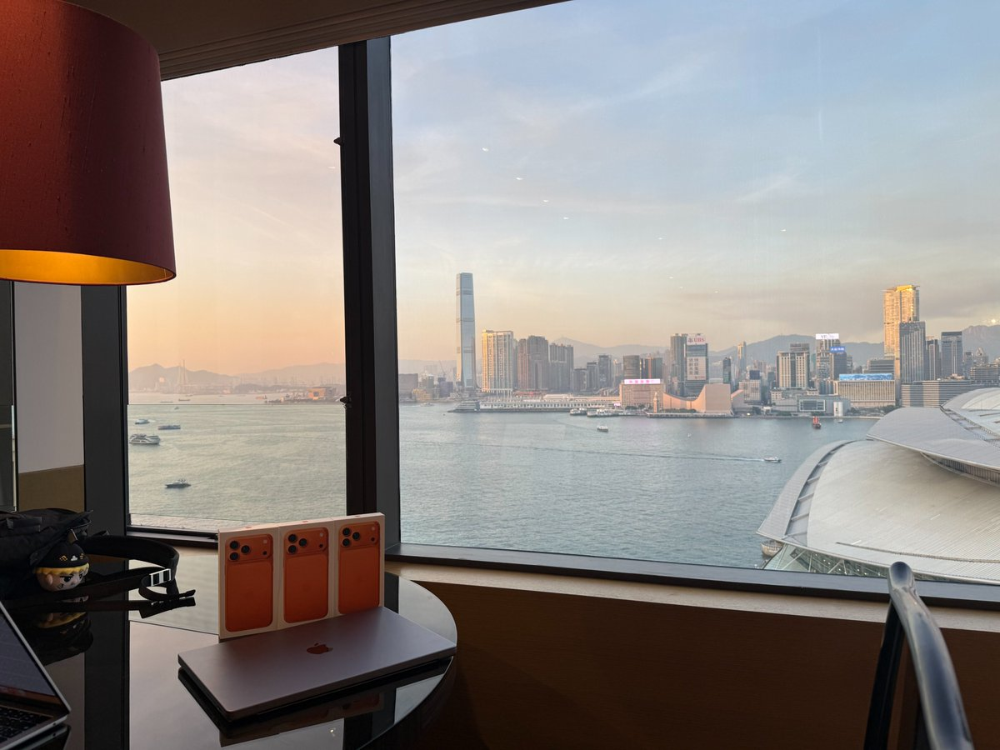
市值两万亿的比特币背后只有极少数核心维护者与极简协议预算——从底层价值理解为什么大仓位必须锚定主流资产。
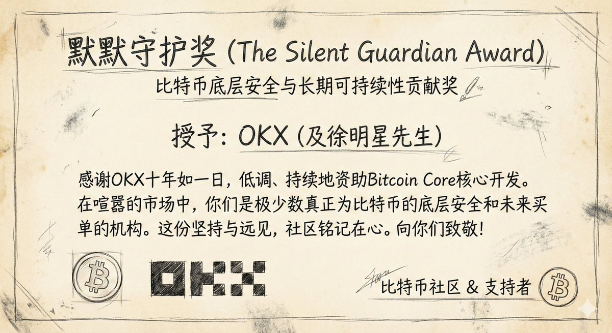
从宏观书单到稳定币与机构化浪潮，记录丰密在每轮周期拐点对大资金流动与行业变迁的思考。
系统梳理丰密早年规划的“主网高门槛 + L2 低成本 + 跨链桥”三条核心布局主线与各条公链生态的实战成败。
紧跟行业新变量：深度拆解未发币稳定币协议、链抽象交易引擎、预测市场和新一轮 Perp/公售项目的机会与风险。
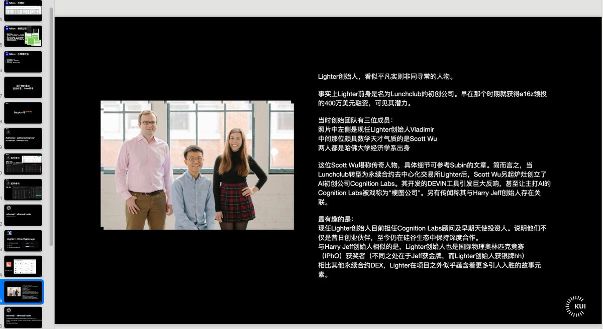
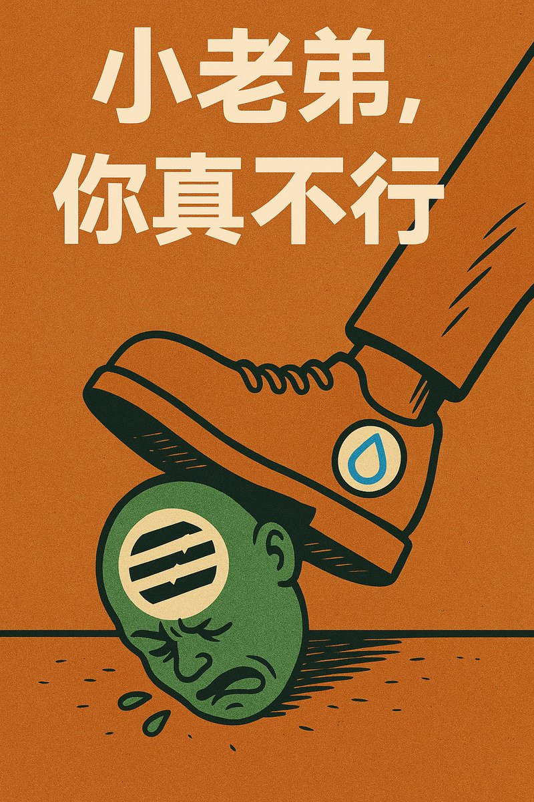
当全网都在卷脚本、卷批量工作室时，丰密反其道而行之：一个人几台电脑、纯手动做高质量真实用户行为，在严苛反女巫时代反而活得最久。
直面撸毛人每天从早点到晚、遇到“Sorry, you're not eligible”被泼冷水的真实苦涩，以及如何在高淘汰率里持续迭代拿大结果。
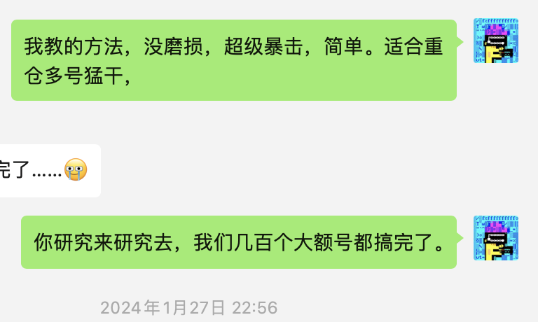
汇总丰密手把手整理的各阶段公链、DeFi 与新协议交互步骤与踩点实操记录。
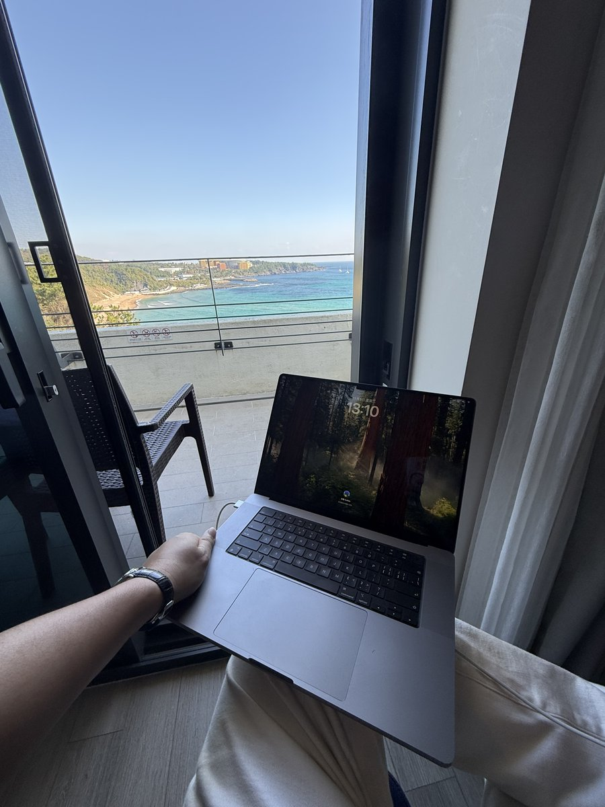
撸毛与链上交互频率越高，越要守住资产安全的最后一道防线：冷热隔离、硬件钱包使用习惯与日常防钓鱼细节。
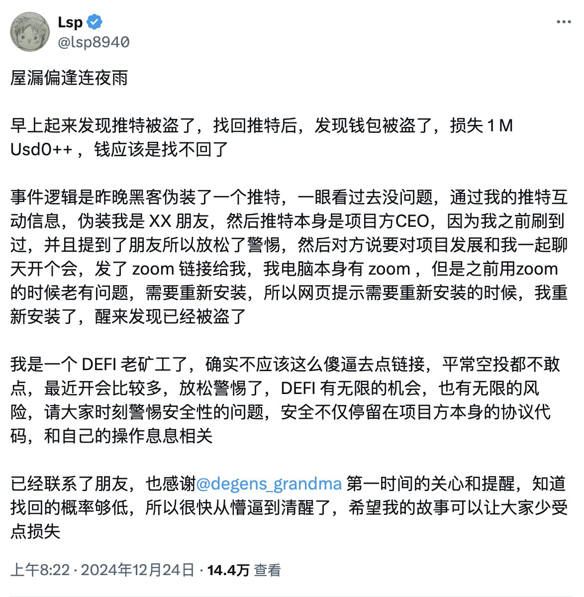
帮社区踩雷预警：记录丰密公开发声曝光的劣质衍生品协议、跑路盘口与常见币圈骗局特征。
赚到 U 怎么安全落袋并顺畅消费？丰密把实测跑通的港卡出金路径（CB/BP/KK→ZA→HSBC Pulse）与高返现生活技巧讲得明明白白。
工欲善其事必先利其器，分享丰密在日常研究、写教程与多任务交互中实测顺手的 AI 与效率工具。
交易与空投之外的人生温度：记录丰密迎来儿子“密密”出生、在深圳感受 Web3 氛围以及步入不惑之年的真实感悟。
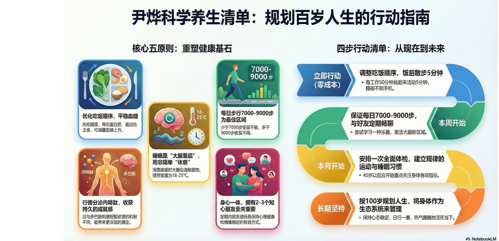
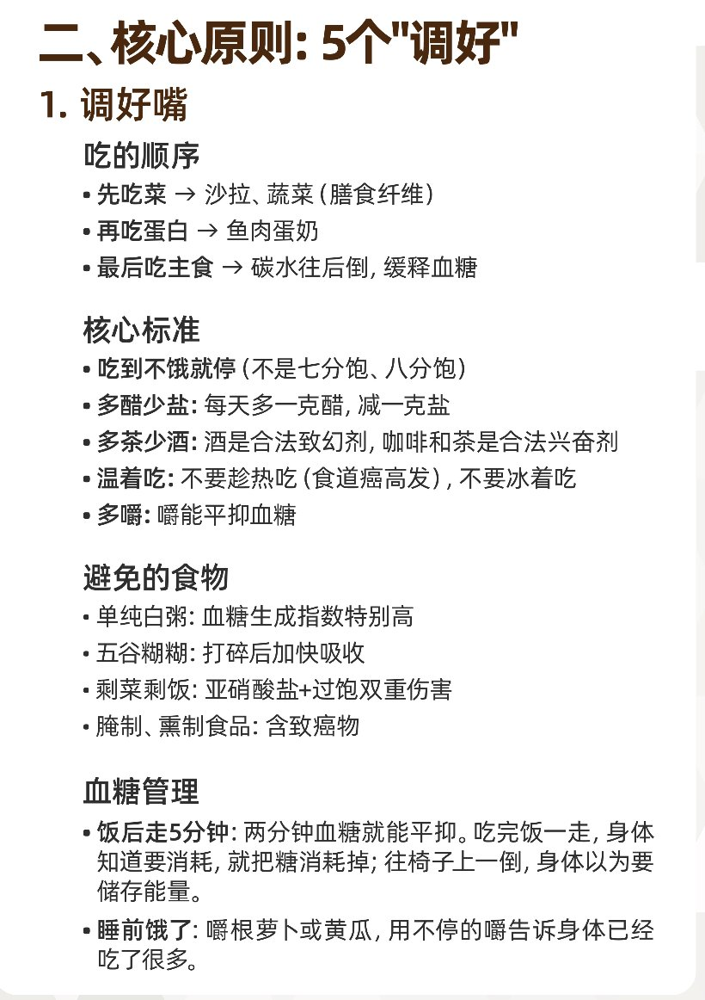
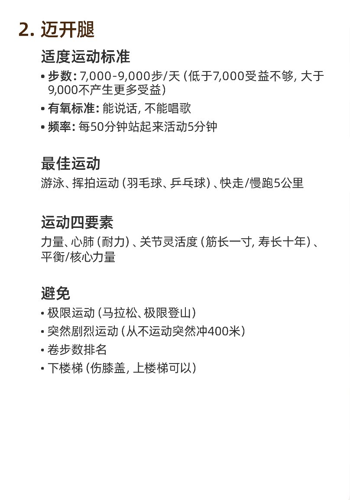
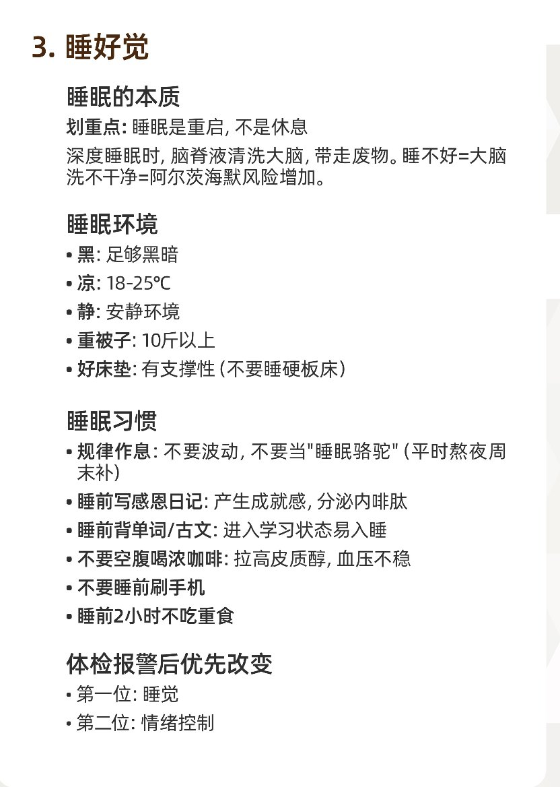
集中归档丰密与亏友社区的日常问答、福利抽奖、私信感悟及简短行业互动，确保前面实战教程板块干净纯粹。